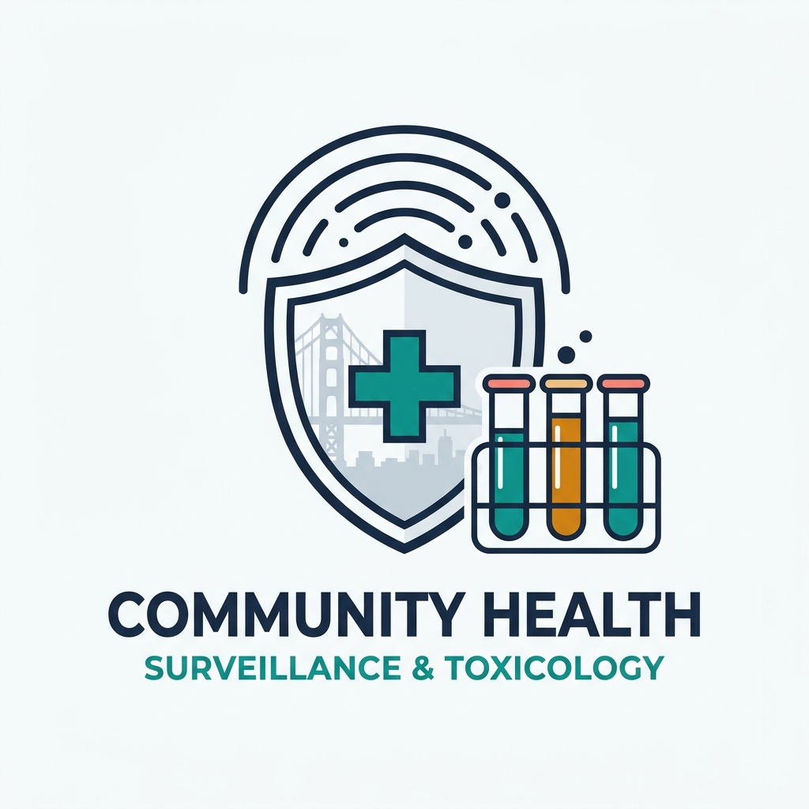
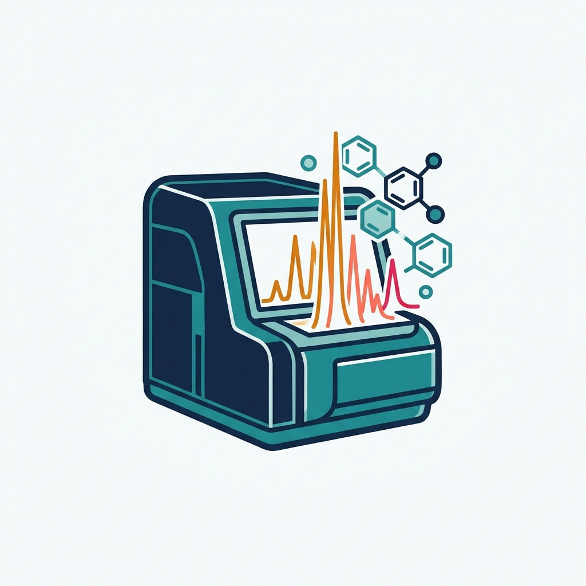
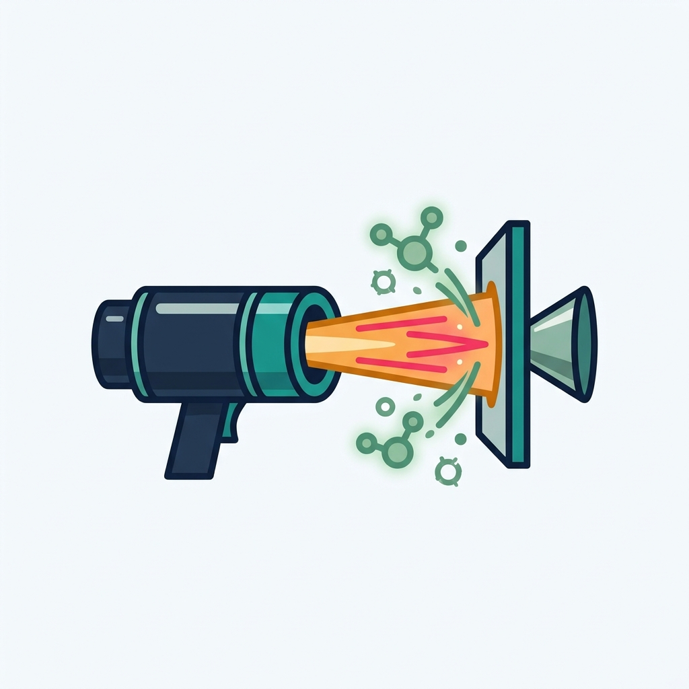
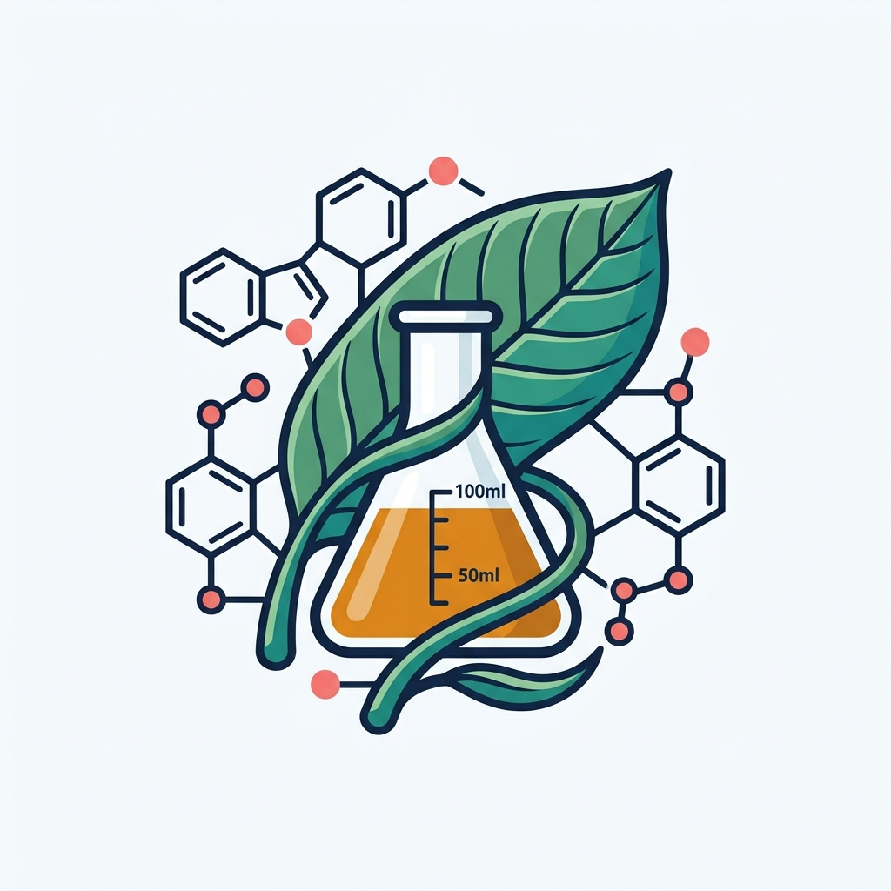
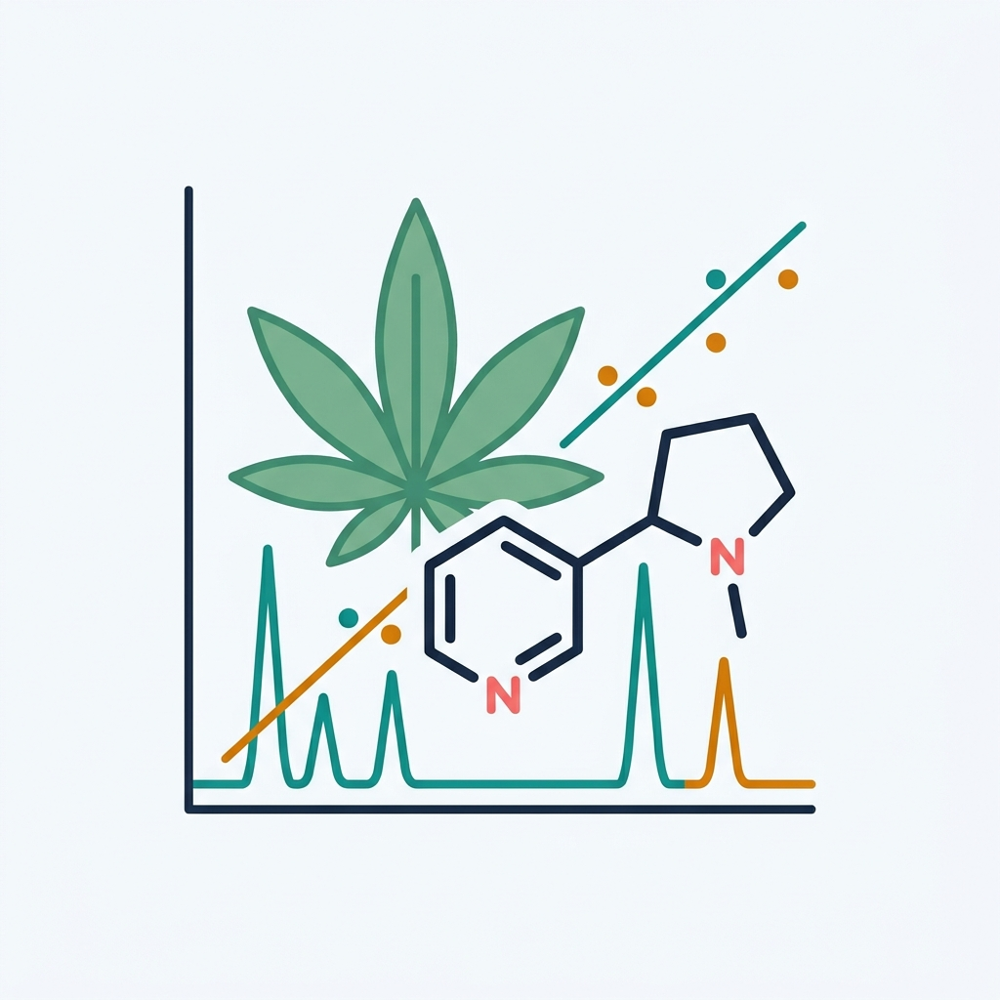

High-resolution mass spectrometry at the frontlines of clinical care and public health.
Directed by Dr. Kara L. Lynch, PhD, DABCC at the University of California, San Francisco and Zuckerberg San Francisco General Hospital (ZSFG), our group develops next-generation mass spectrometry workflows to detect emerging synthetic drugs, natural toxins, and clinical biomarkers in real time.
Toxicology Research & Clinical Translation
Bridging analytical chemistry innovation with safety-net hospital diagnostics, overdose prevention, and public health epidemiology.
Comprehensive Drug Testing via High-Resolution Mass Spectrometry
Traditional immunoassays miss novel synthetic compounds. Using liquid chromatography coupled to quadrupole time-of-flight mass spectrometry (SCIEX X500R QTOF) with SWATH and IDA acquisition, we maintain high-resolution screening coverage across 239 drugs, pharmaceuticals, illicit designer drugs, and toxic compounds.
Illicit Drug Supply Monitoring & Harm Reduction
In close partnership with ZSFG's Ward 93 Opioid Treatment Program and the San Francisco Department of Public Health (SFDPH), our lab tracks real-world exposure trends to fentanyl analogs, xylazine, medetomidine, and emerging designer benzodiazepines (such as bromazolam), as well as evaluating point-of-care drug checking strips.
Rapid DART-MS & Quantitative Botanical/Cannabinoid Assays
We pioneer rapid Direct Analysis in Real Time (DART) mass spectrometry for chromatography-free substance identification alongside quantitative LC-MS/MS methods for complex botanical alkaloids (*Mitragyna speciosa* / Kratom diastereomers) and ultra-trace cannabinoid and nicotine metabolites.
Current Projects in the Lynch Lab
Five flagship analytical and translational toxicology initiatives currently underway at ZSFG and UCSF.




